Every reaction file in reaction_diffusion/data, run through the simulator we built. Each entry has the command to paste, how long the serial and parallel simulations took on a 10-core laptop, and a video of the run. Changing the system means writing a new CSV file, never new code.
8x and up parallel pays off3x to 8x some gainUnder 3x too little work to split
Running one yourself
Open a terminal in your python/src/reaction_diffusion folder.
Copy a command from below and run it (use python instead of python3 on Windows).
Your animation and counts plot appear in a subfolder of output/ named after the reaction file.
The arguments are, in order: how to place the particles (random scatters every species across the box, and clustered gives each species its own vertical band), the reaction file, the number of particles of each species, the width and height of the box, and the number of steps. Your pictures and times will differ from ours, because the simulation is random.
Serial versus parallel, every run
Simulation time only (no rendering) on an Apple M2 Pro with 10 processes, one run each, so treat every number as rough. Speedup grows with the number of particles, because checking every pair of particles for reactions is the work that gets split across strips.
Demo
Particles at start
Steps
Serial
Parallel
Speedup
Lotka-Volterra, 50 steps
1,000
50
1.0 s
0.2 s
4.3x
Lotka-Volterra, 250 steps
1,000
250
2.7 s
0.3 s
8.5x
Lotka-Volterra, 1,500 steps
1,000
1,500
23 s
1.6 s
14x
Lotka-Volterra, 4,500 steps
1,000
4,500
1 min 03 s
5.5 s
11x
Gause competition
1,500
4,500
44 s
3.8 s
12x
SIRS epidemic
1,500
4,500
2 min 50 s
9.2 s
19x
Food chain
300
2,000
4.0 s
0.7 s
5.5x
Repressilator, 500 per species
1,500
4,500
4 min 46 s
13 s
23x
Repressilator, 1,500 per species
4,500
1,000
9 min 38 s
17 s
35x
Repressilator, 4,500 per species
13,500
1,000
~77 min 59 s
2 min 09 s
36x
Rock-paper-scissors
4,500
1,000
3 min 00 s
16 s
11x
Rock-paper-scissors, bands
1,500
1,000
58 s
2.5 s
23x
Lizard-Spock, bands
7,500
1,000
~26 min 34 s
40 s
40x
Lizard-Spock, scattered
7,500
1,000
25 min 09 s
46 s
33x
Gray-Scott
1,550
4,000
1 min 41 s
7.3 s
14x
A ~ marks a serial time measured on a shorter run and scaled up to the full step count, because the full serial run would take too long to wait for. In systems with births and deaths, the run time also depends on how large the populations happen to grow, so two runs of the same command can differ a lot.
Predators and prey: Lotka-Volterra
14x at 1,500 steps
2 species · 500 of each at the start · 1000 by 1000 box
A predator (orange) that meets a prey (green) eats it and makes another predator, with probability 0.1.
Prey reproduce on their own, so more prey means more births.
Predators die at a fixed rate.
python3 main.py random data/reactions_lotka_volterra.csv 500 1000 1000 50
Serial 1.0 sParallel 0.2 s4.3x faster
Not much happens in 50 steps: predators rise and prey fall.
python3 main.py random data/reactions_lotka_volterra.csv 500 1000 1000 250
Serial 2.7 sParallel 0.3 s8.5x faster
python3 main.py random data/reactions_lotka_volterra.csv 500 1000 1000 1500
Serial 23 sParallel 1.6 s14x faster
The first full cycles of boom and bust appear.
python3 main.py random data/reactions_lotka_volterra.csv 500 1000 1000 4500
Serial 1 min 03 sParallel 5.5 s11x faster
Run this one with the serial block commented out. In this run the prey hit zero at step 3,285.
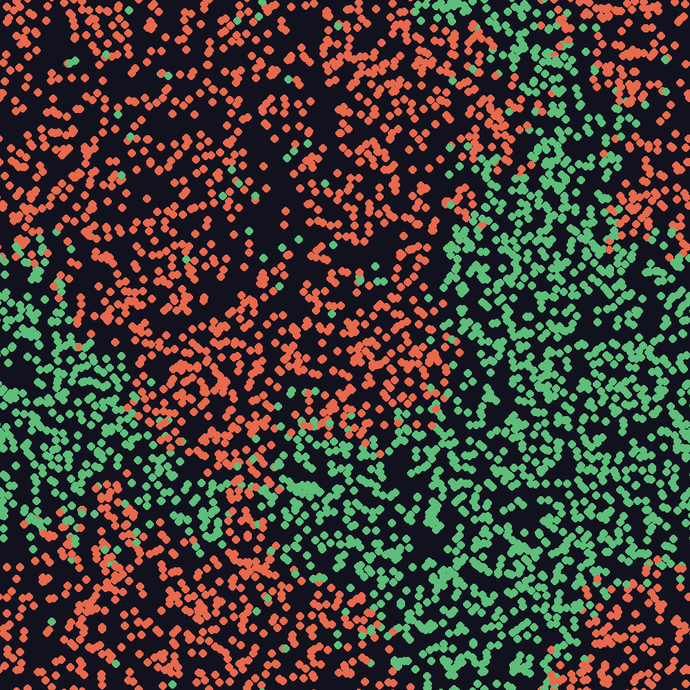
Step 2,985. Predators (orange) sweep through a boom of prey (green). Click to play the run at double speed.
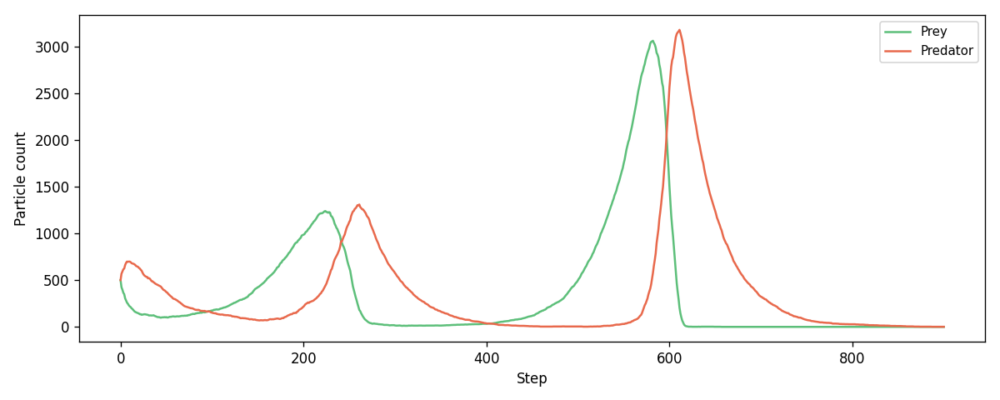
Each boom in prey is followed by a boom in predators. The swings grow until the prey hit zero, and then the predators starve. The axis counts frames, and one frame is 5 steps.
Many rabbits make the wolves happy, so the wolves rise. Then the wolves run short of rabbits and die off, the rabbits recover, and the cycle repeats. The differential equations from the 1920s oscillate smoothly forever. Our finite, random particles drift from one cycle to a larger one, and on a long enough run somebody goes extinct. Usually the prey run out and the predators starve after them. If the predators happen to die first, nothing stops the prey, and the simulation slows to a crawl as their numbers explode: press Ctrl+C and run it again. Why we care: this is the run that earns the parallel code its keep. The story only shows up over thousands of steps, and thousands of steps is exactly what the serial simulator makes you wait for.
Ask the class: if we keep raising the number of steps, what happens to the serial time? Once we trust the parallel simulator, is the serial run still worth waiting for?
Two predators, one food supply: Gause
12x
3 species · 500 of each at the start · 1000 by 1000 box · 4,500 steps
The resource (green) reproduces on its own.
Competitors A (blue) and B (orange) each eat the resource with probability 0.1. They never touch each other.
Both competitors die on their own. B dies slightly faster: 0.03 against 0.02.
python3 main.py random data/reactions_gause.csv 500 1000 1000 4500
Serial 44 sParallel 3.8 s12x faster
The two times come from two runs whose populations averaged the same size.
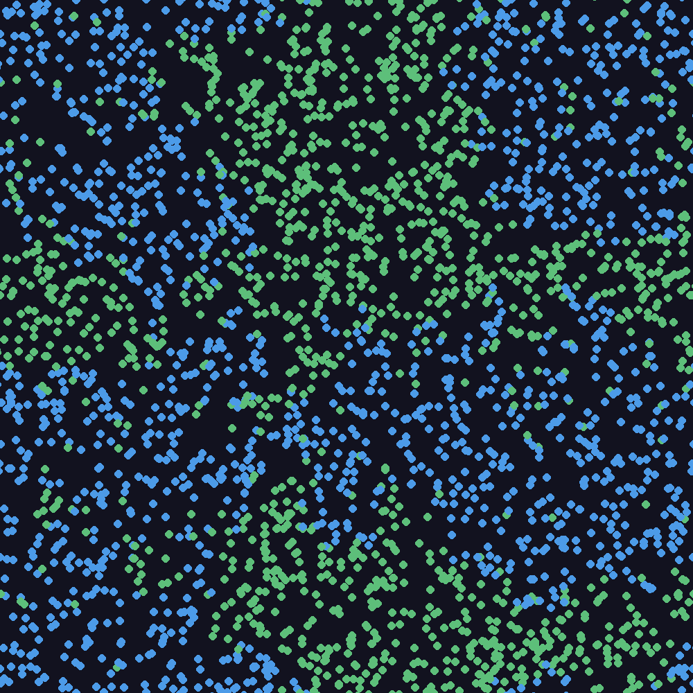
Step 1,530. Competitor A (blue) spreads through a boom in the resource (green). Competitor B (orange) is already extinct. Click to play the run at double speed.
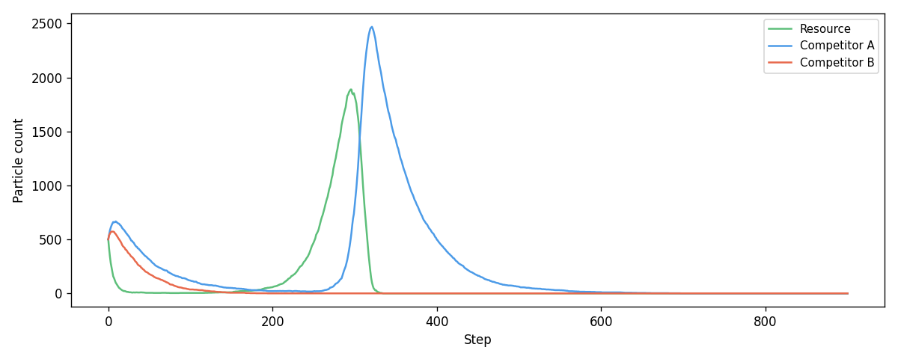
B goes extinct at step 970. A then eats the resource to zero at step 1,675 and starves. The axis counts frames, and one frame is 5 steps.
Two nearly identical competitors start scattered through the same box, and one of them dwindles away while the other feasts on each boom in the resource. In 9 of our 10 runs, the loser was B. The winner does not get a happy ending here: with no rival, A eats the resource down to nothing and then starves, so every one of our runs ended with an empty box. The first half of the story is the competitive exclusion principle: two species that compete for exactly the same resource cannot coexist forever. Why we care: it gives a mathematical reason that ecosystems sort into niches. If two predators are going to share an environment, they had better not eat the same food.
Ask the class: before you press Enter, can both competitors survive on the same food supply?
Epidemics: SIRS
19x
3 species · 500 of each at the start · 1000 by 1000 box · 4,500 steps
An infected individual (orange) that meets a susceptible one (blue) infects them with probability 0.1.
Infected individuals recover on their own (green), so the disease is not lethal.
Recovered individuals slowly lose immunity and become susceptible again. That is the final S in SIRS.
python3 main.py random data/reactions_sirs.csv 500 1000 1000 4500
Serial 2 min 50 sParallel 9.2 s19x faster
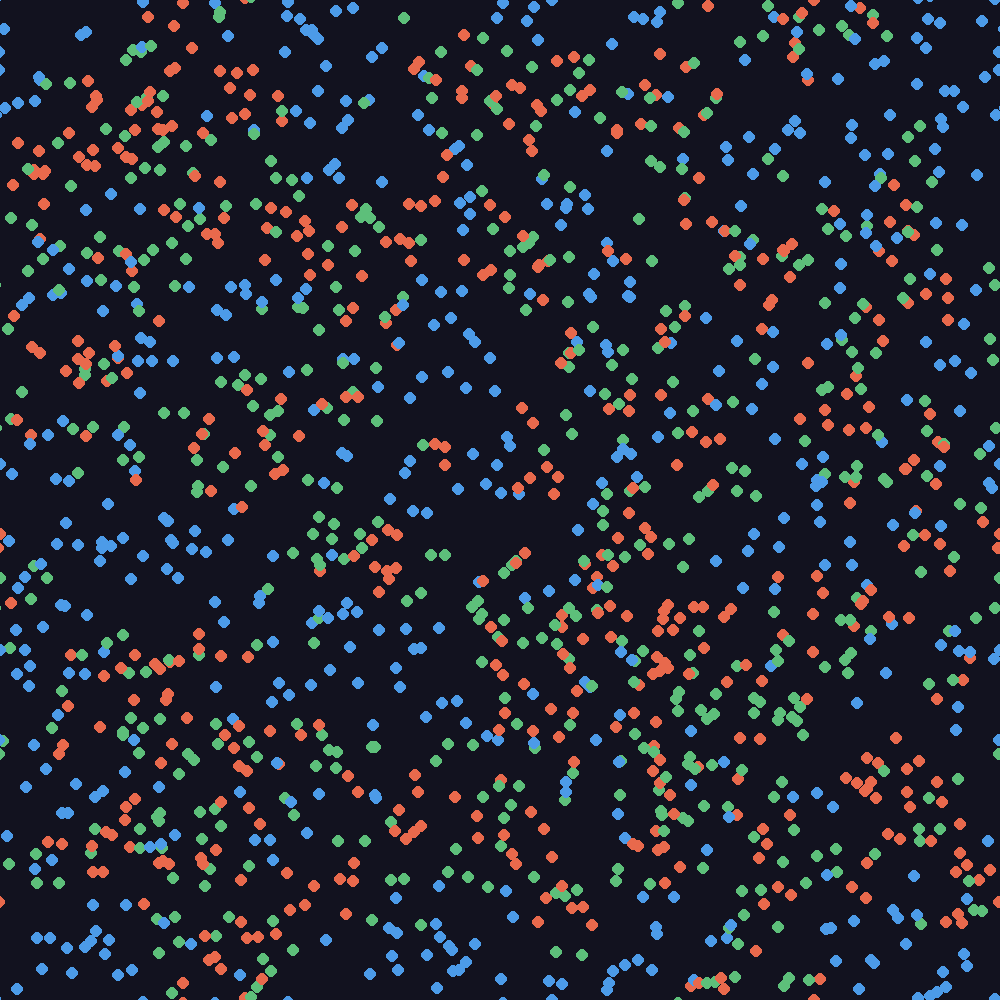
Step 2,880. Pockets of susceptible individuals (blue) among infected (orange) and recovered (green). Click to play the run at double speed.
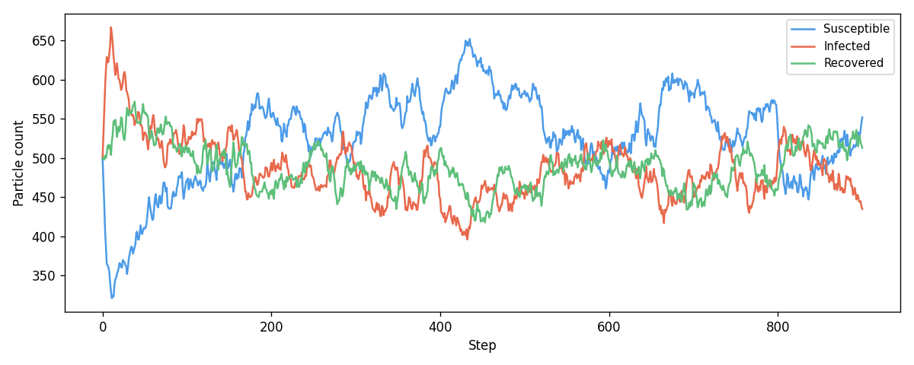
After an early wave of infections, the counts jitter around an equilibrium. The axis counts frames, and one frame is 5 steps.
The counts are noisy, but everything heads toward an equilibrium where the disease stays in the population. Every species takes steps of length 1, because people do not spread out wildly, and that leaves pockets of susceptible people ringed by infected and recovered ones. Why we care: nobody should forecast a real epidemic with this. The point is that the simulator we built for ecology models a disease with no change to the code.
Grass, rabbits, wolves: the food chain
5.5x
3 species · 200 grass, 80 rabbits, 20 wolves · 800 by 600 box · 2,000 steps · the exercise from the code along
Grass (green) sprouts on its own.
Rabbits (tan) eat grass, and wolves (gray) eat rabbits, each with probability 0.1.
Wolves die at a fixed rate.
python3 main.py random data/reactions_food_chain.csv 200,80,20 800 600 2000
Serial 4.0 sParallel 0.7 s5.5x faster
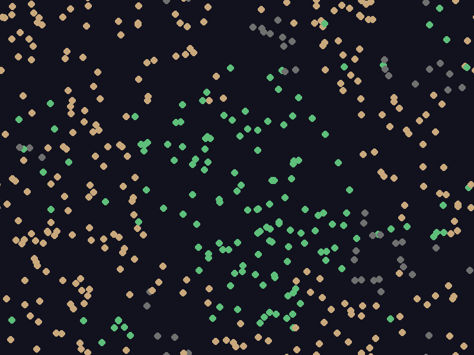
Step 1,995. Grass (green), rabbits (tan), and wolves (gray). Click to play the run at double speed.
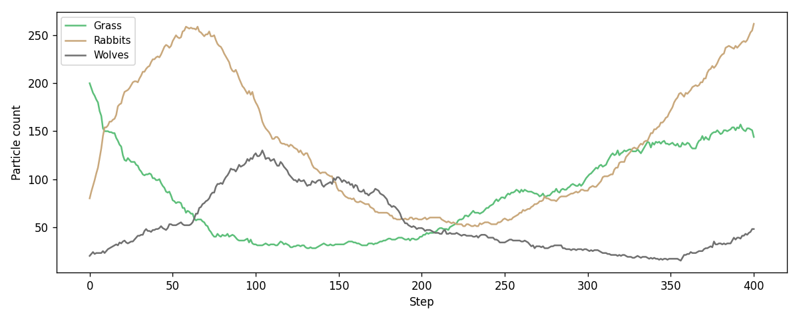
The three levels of the food chain over 2,000 steps. The axis counts frames, and one frame is 5 steps.
Three levels, one line of energy: grass to rabbits to wolves. The comma-separated counts give each species its own starting number. Why we care: it is Lotka-Volterra with one more link, and it shows one of the smallest speedups on the page. With only a few hundred particles there is very little work to split, and the cost of handing strips to processes eats much of the gain.
A genetic oscillator: the repressilator
35x at 4,500 particles
3 species · 1000 by 1000 box · no births or deaths, so the total never changes
lacI (light blue) converts cI, tetR (yellow) converts lacI, and cI (pink) converts tetR, each with probability 0.15.
Each species eats the one it represses, and the three rules close a cycle.
python3 main.py random data/reactions_repressilator.csv 500 1000 1000 4500
Serial 4 min 46 sParallel 13 s23x faster
python3 main.py random data/reactions_repressilator.csv 1500 1000 1000 1000
Serial 9 min 38 sParallel 17 s35x faster
python3 main.py random data/reactions_repressilator.csv 4500 1000 1000 1000
Serial about 77 min 59 s (est.)Parallel 2 min 09 s36x faster
13,500 particles is close to the limit of a laptop. The serial run would take over an hour.
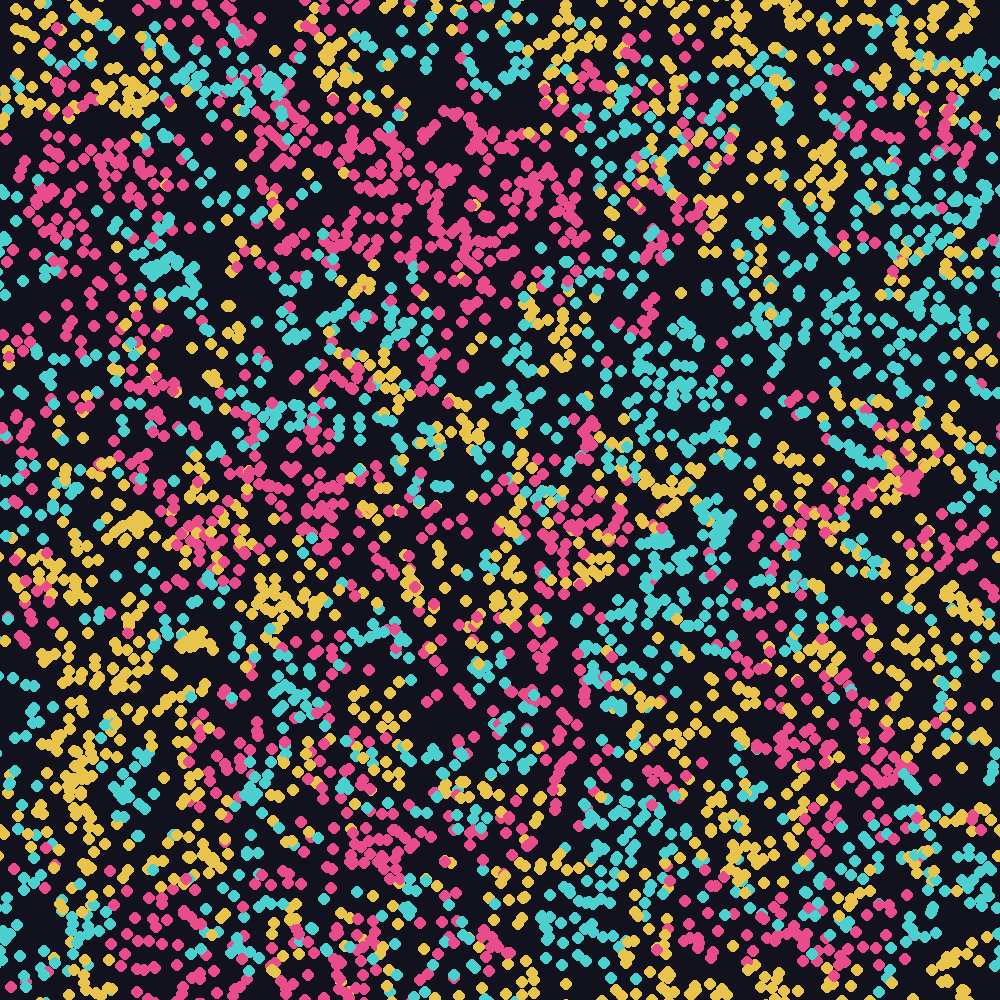
Step 885. Patches of lacI (light blue), tetR (yellow), and cI (pink), with reactions on the frontiers. Click to play the run at double speed.
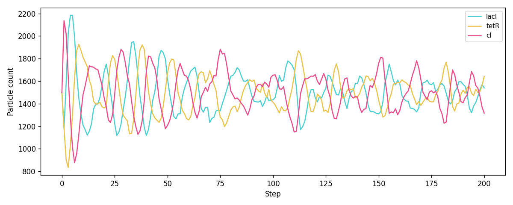
A peak in cI (pink) is followed by lacI (light blue), then tetR (yellow), then cI again. The axis counts frames, and one frame is 5 steps.
Particles that start at random sort themselves into patches of each color, and all the change happens on the frontiers between patches. The counts peak in a fixed order: pink, then light blue, then yellow, then pink again. When pink is abundant it is a feast for light blue, which is the same idea that drove Lotka-Volterra 75 years earlier. More particles means less randomness and sharper peaks. Why we care: Elowitz and Leibler built this circuit in a living bacterium around 2000, and three lines of a CSV file reproduce its oscillation.
Ask the class: every species starts with the same count, placed at random. Will they stay balanced? If not, in what order will they rise and fall?
Rock, paper, scissors
11x
3 species · 1000 by 1000 box · 1,000 steps · the repressilator with every rate set to 1.0
Rock (gray) beats scissors (orange), paper (blue) beats rock, and scissors beats paper.
Every encounter converts the loser. There is no dice roll.
python3 main.py random data/reactions_rps.csv 1500 1000 1000 1000
Fewer particles, started in bands: the fronts chase each other and begin to curl.
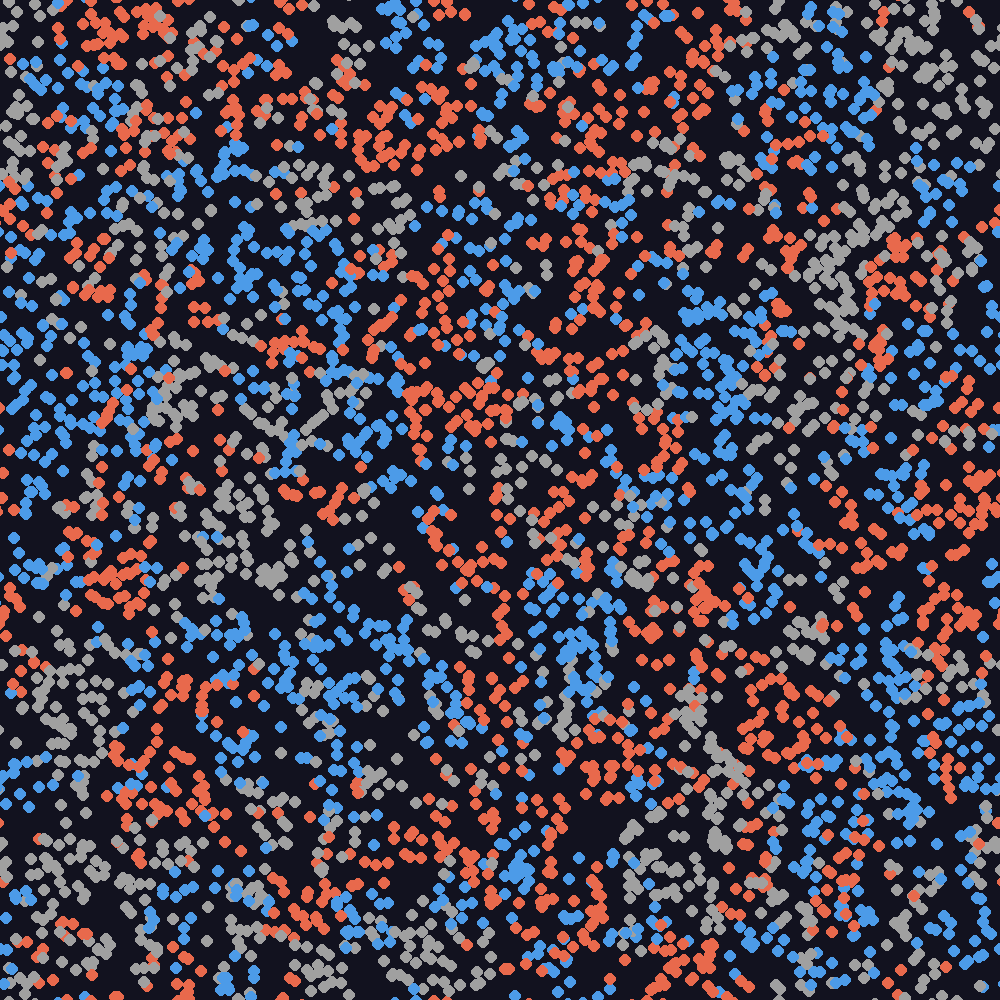
Step 545. Rock (gray), paper (blue), and scissors (orange) in interleaved fronts. Click to play the run at double speed.
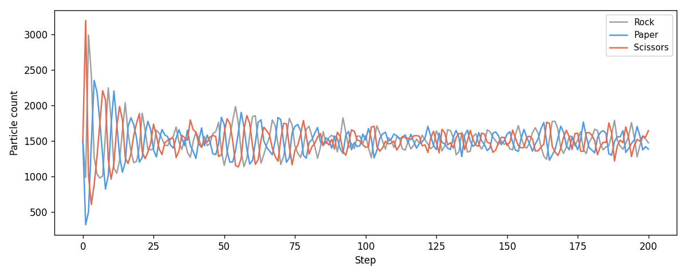
With every rate at 1.0, the species take turns peaking much faster than in the repressilator. The axis counts frames, and one frame is 5 steps.
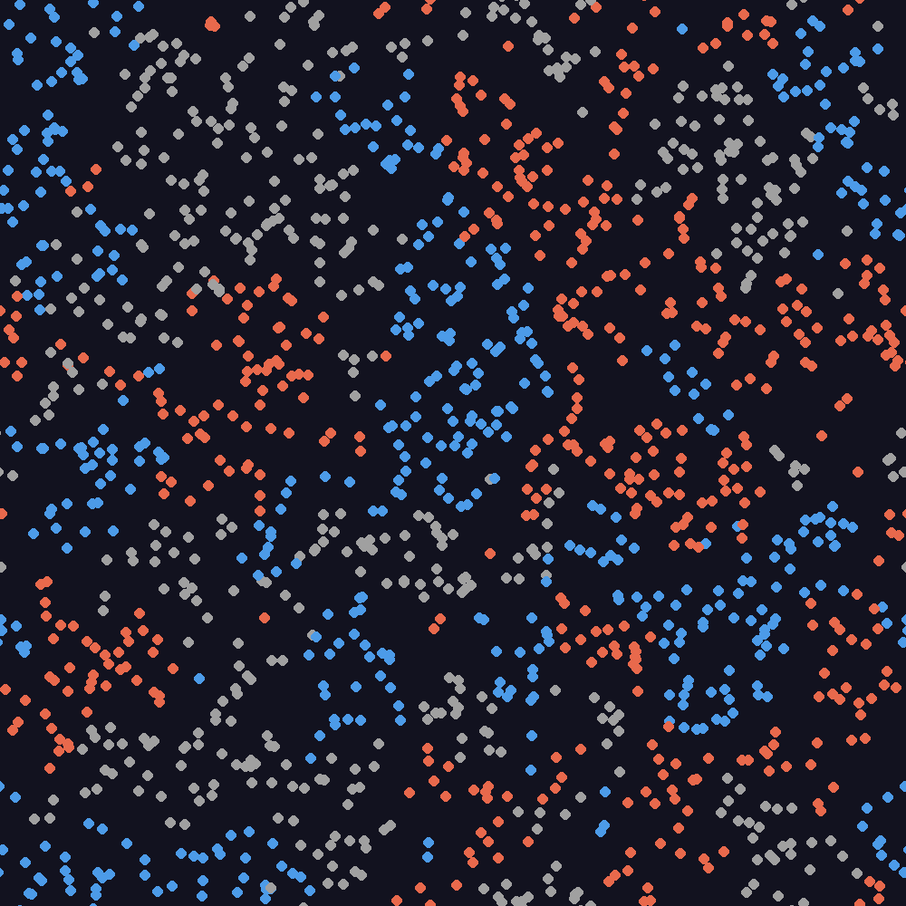
Step 390. Rock-paper-scissors with 500 per species, started in bands. Click to play.
Taking the randomness out of the reactions makes the oscillations faster and the peaks sharper than the repressilator's. The order is scissors, then rock, then paper: when scissors are everywhere, every rock is surrounded by prey. Started in bands with fewer particles, the fronts chase each other and begin to curl. Why we care: one number in a CSV file separates a landmark of synthetic biology from a playground game. And the serial simulator would keep us waiting 3 min 00 s for what the parallel one does in 16 s.
Rock, paper, scissors, lizard, Spock
33x
5 species · 1,500 of each (7,500 particles) · 1000 by 1000 box · 1,000 steps
Rock (gray) beats scissors and lizard. Paper (blue) beats rock and Spock.
Scissors (orange) beats paper and lizard. Lizard (green) beats paper and Spock.
Spock (purple) beats rock and scissors. Every rate is 1.0.
Serial about 26 min 34 s (est.)Parallel 40 s40x faster
Bands are unfair: rock and paper are gone within 25 steps.
python3 main.py random data/reactions_rpsls.csv 1500 1000 1000 1000
Serial 25 min 09 sParallel 46 s33x faster
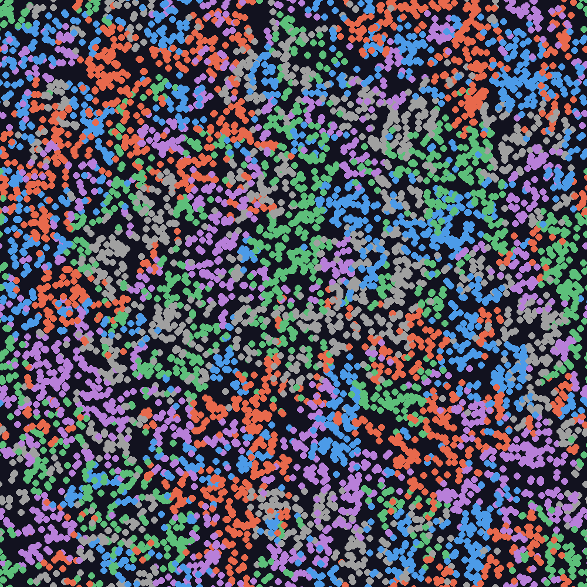
Step 595. Rock (gray), paper (blue), scissors (orange), lizard (green), and Spock (purple). Click to play the run at double speed.
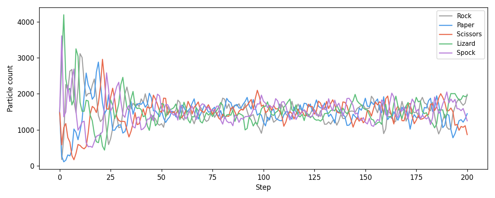
All five species survive this run, but the peaks are far less orderly than with three. The axis counts frames, and one frame is 5 steps.
Five species still make radiating stripes, but the peaks are far less orderly than with three, and we would need many more particles to see a clean rotation. Often one or two strategies die out and leave an ordinary three-way game. That is what happens when we start in bands: rock and paper vanish within 25 steps, and scissors, lizard, and Spock play on. Why we care: this is the heaviest run on the tour: 25 min 09 s of serial work done in 46 s. It is the one where the fans spin up and the gap between serial and parallel is easiest to feel.
Turing patterns: Gray-Scott
14x
3 species · 1,500 U, 50 V, 0 P · 800 by 600 box · 4,000 steps · an extra to explore
V (yellow) meets U (blue) and turns it into another V, with probability 0.5.
V decays into inert P (dark), and P turns back into U.
U takes steps of length 4 and V of length 1: the food moves fast and the activator moves slowly.
python3 main.py random data/reactions_gray_scott.csv 1500,50,0 800 600 4000
Serial 1 min 41 sParallel 7.3 s14x faster
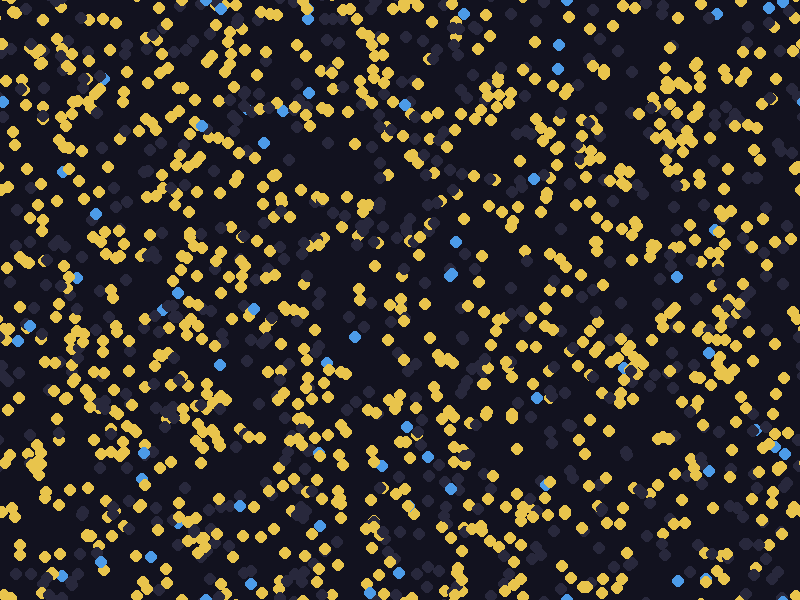
Step 2,415. V (yellow) has taken over most of the box, with U (blue) and P (dark) scattered through it. Click to play the run at double speed.
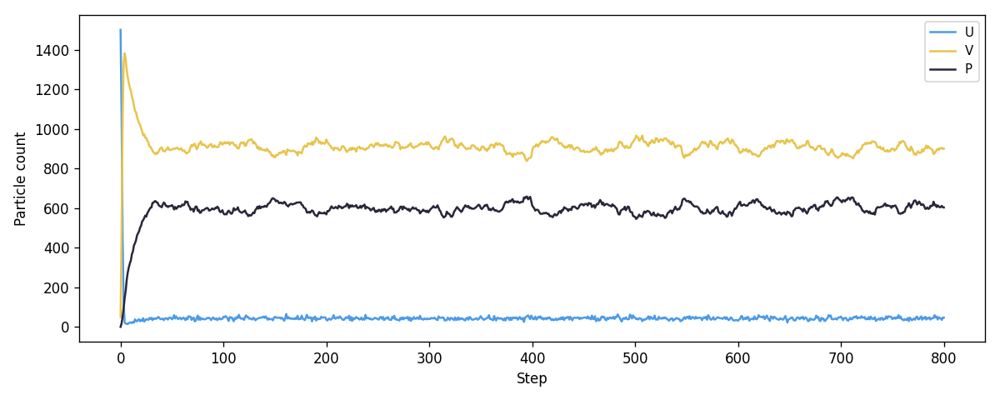
V explodes through the U it started with, then settles. The axis counts frames, and one frame is 5 steps.
This is the particle version of the model behind spots and stripes on animal coats. Slow V clusters eat the U around them while fresh U drifts in from far away. With this few particles, V takes over most of the box and we get noisy patches, with no crisp spots. Why we care: sharp Turing patterns need a huge number of particles, far more than a laptop can simulate. That is the argument for a cluster with hundreds of cores.